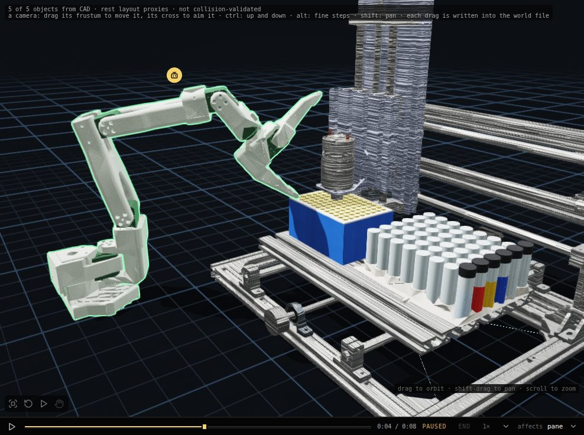
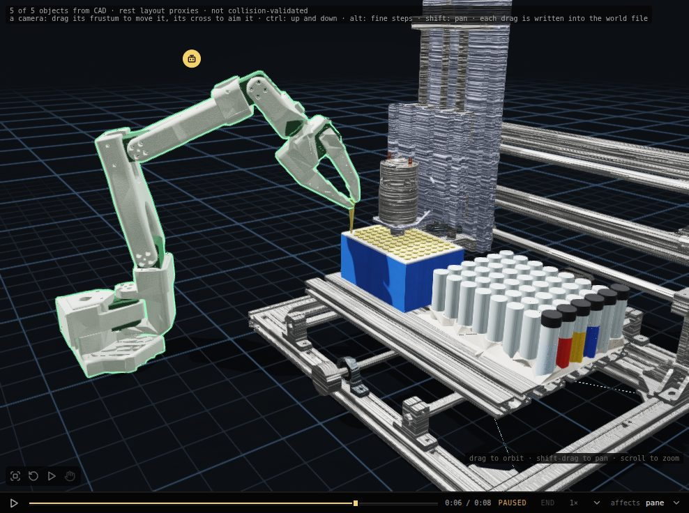

An arm picks a pipette tip: LabRat’s bench
An agent drives an SO-101 arm in the simulated LabRat bench: it opens the gripper, swings over tip A1, goes down to the collar, closes and lifts. The frames are screen captures of the run, and the plot below is drawn from the run’s own servo stream.
Reading the recording…